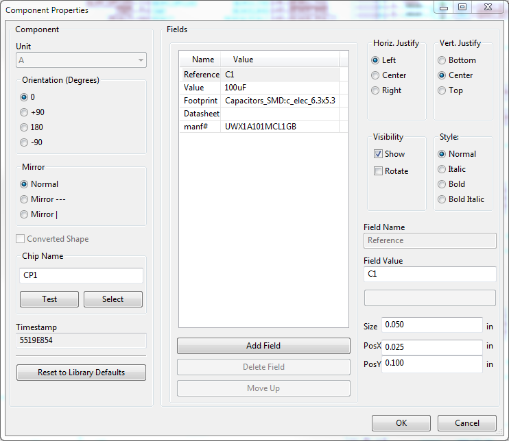

Welcome to kifield’s documentation!¶
Contents:
kifield¶

A utility for manipulating part fields in KiCad schematic files or libraries. KiField can extract all the component fields from a schematic or library and place them into a spreadsheet for bulk editing, after which you can insert the edited values from the spreadsheet back into the schematic or library.
KiField is usually employed in a three-step process:
First use KiField to extract the part field labels and values from a schematic or library and place them into a CSV or XLSX spreadsheet file.
Edit the spreadsheet file to change existing field values, add entirely new fields, or completely delete fields.
Finally, use KiField to insert the updated field labels and values from the spreadsheet file into the schematic or library.
Free software: MIT license
Documentation: https://devbisme.github.io/KiField.
Features¶
Extracts all fields and values from one or more KiCad schematic libraries or files (even hierarchical designs), and inserts them into a spreadsheet (either CSV or XLSX format).
Extracts all fields and values from one or more CSV or XLSX spreadsheet files and inserts them into one or more KiCad schematics or libraries.
Usage¶
KiField is usually employed in a three-step process:
First use KiField to extract the part field labels and values from a schematic or library and place them into a CSV or XLSX spreadsheet file.
Edit the spreadsheet file to change existing field values, add entirely new fields, or completely delete fields.
Finally, use KiField to insert the updated field labels and values from the spreadsheet file into the schematic or library.
Command-line Options¶
usage: kifield [-h] [--extract file [file ...]] [--insert file [file ...]]
[--recurse] [--fields name|/name|~name [name|/name|~name ...]] [--overwrite]
[--nobackup] [--group] [--norange] [--debug [LEVEL]] [--version]
Insert fields from spreadsheets into KiCad schematics or libraries, or gather fields from
schematics or libraries and place them into a spreadsheet.
optional arguments:
-h, --help show this help message and exit
--extract file [file ...], -x file [file ...]
Extract field values from one or more XLSX, CSV, TSV, SCH, LIB or DCM files.
--insert file [file ...], -i file [file ...]
Insert field values into one or more XLSX, CSV, TSV, SCH, LIB or DCM files.
--recurse, -r Allow recursion from a top-level schematic into lower-level sub-schematics.
--fields name|/name|~name [name|/name|~name ...], -f name|/name|~name [name|/name|~name ...]
Specify the names of the fields to extract and insert. Place a '/' or '~'
in front of a field you wish to omit. (Leave blank to extract/insert *all* fields.)
--overwrite, -w Allow field insertion into an existing file.
--nobackup, -nb Do *not* create backups before modifying files. (Default is to make backup files.)
--group, -g Group components with the same field values into single lines when inserting into
a spreadsheet or CSV/TSV. (Default is to have one component per line)
--norange, -nr Disable hyphenated ranges when components are grouped, explicitly showing each
component in a group.
--debug [LEVEL], -d [LEVEL]
Print debugging info. (Larger LEVEL means more info.)
--version, -v show program's version number and exit
Examples¶
Adding Fields to a Schematic or Library¶
To extract the fields from one or more schematics and place them in a CSV file:
kifield -x my_design.sch -i my_design_fields.csv
Or you can place them in an XLSX spreadsheet:
kifield -x my_design.sch -i my_Design_fields.xlsx
The result will look something like this (I added spaces to format it into nice columns):
Refs, datasheet, footprint, value
C1, , Capacitors_SMD:c_elec_6.3x5.3, 100uF
C2, , Capacitors_SMD:C_0805, 10uF
CON1, , Connect:BARREL_JACK, BARREL_JACK
GPIO1, , RPi_Hat:Pin_Header_Straight_2x20, RPi_GPIO
JP2, , XESS:HDR_1x3, JUMPER3
LED1, , LEDs:LED-0603, LED
LED2, , LEDs:LED-0603, LED
R2, , Resistors_SMD:R_0402, 100
R3, , Resistors_SMD:R_0402, 100
RN1, , XESS:CTS_742C043, 4.7K
RN2, , XESS:CTS_742C043, 100
RN5, , XESS:CTS_742C083, 100
U1, , XESS:SOT-223, AZ1117EH-3.3
U2, , SMD_Packages:SOIC-8-N, I2C Flash
U3, , XESS:SOT-223, AZ1117EH-1.2
Now suppose you want to add the manufacturers part number to some of the
components. Just add a new column named manf# and fill in some of the
values like so:
Refs, datasheet, footprint, value, manf#
C1, , Capacitors_SMD:c_elec_6.3x5.3, 100uF, UWX1A101MCL1GB
C2, , Capacitors_SMD:C_0805, 10uF, UWX1A101MCL1GB
CON1, , Connect:BARREL_JACK, BARREL_JACK, PJ002A
GPIO1, , RPi_Hat:Pin_Header_Straight_2x20, RPi_GPIO,
JP2, , XESS:HDR_1x3, JUMPER3,
LED1, , LEDs:LED-0603, LED, LTST-C190KFKT
LED2, , LEDs:LED-0603, LED, LTST-C190KFKT
R2, , Resistors_SMD:R_0402, 100,
R3, , Resistors_SMD:R_0402, 100,
RN1, , XESS:CTS_742C043, 4.7K,
RN2, , XESS:CTS_742C043, 100,
RN5, , XESS:CTS_742C083, 100,
U1, , XESS:SOT-223, AZ1117EH-3.3, AZ1117EH-3.3TRG1
U2, , SMD_Packages:SOIC-8-N, I2C Flash, CAT24C32WI-GT3
U3, , XESS:SOT-223, AZ1117EH-1.2,
To insert the manufacturer’s numbers back into the schematic, just swap the roles of the CSV and schematic files:
kifield -x my_design_fields.csv -i my_design.sch -w
Now when you examine the parts in eeschema, you should see the added manufacturer’s part numbers:
Adding fields to a schematic parts library is done in an equivalent manner.
In this case, however, the Refs column will hold the library name of the
component rather than its reference designator in a schematic.
You can also use KiField with the description (.dcm) file associated with a parts library.
However, description files only support three fields with specific names:
description, keywords and docfile.
Any other fields will be ignored.
Making Fields Visible or Invisible¶
To manage the visual clutter of a schematic, you can set the visibility or invisibility of inserted fields as follows:
Prefixing the header of a column with
[I]will make every entry in that column invisible. Prefix with a[V]to make them all visible.Any values in the column prefixed with
[I]or[V]will override the column heading.Without prefixes, any new field is invisible by default.
Existing fields retain whatever their original visibility/invisibility was.
Removing Fields from a Schematic or Library¶
It’s also easy to remove fields from a schematic or library. Just delete all the data for a spreadsheet column but leave the header like so:
Refs, datasheet, footprint, value, manf#
C1, , , 100uF,
C2, , , 10uF,
CON1, , , BARREL_JACK,
GPIO1, , , RPi_GPIO,
JP2, , , JUMPER3,
LED1, , , LED,
LED2, , , LED,
R2, , , 100,
R3, , , 100,
RN1, , , 4.7K,
RN2, , , 100,
RN5, , , 100,
U1, , , AZ1117EH-3.3,
U2, , , I2C Flash,
U3, , , AZ1117EH-1.2,
After inserting the spreadsheet values into the schematic, all the PCB footprints and manufacturer’s part numbers will be erased.
Removing fields from a schematic parts library is done in an equivalent manner.
Restricting the Range of Field Changes¶
There are two ways to prevent KiField from making changes in a schematic or library:
Clear one or more spreadsheet cells holding part references. KiField will not insert or change any field values for those parts because there is no way to locate them in the schematic or library file with the reference removed. You can also achieve the same result by deleting the entire row of the spreadsheet.
Use KiField’s
--fieldsoption to specify the names of one or more spreadsheet columns whose values will be inserted into the schematic or library file. The values in any other column will be ignored. You can also omit one or more fields by adding a ‘/’ or ‘~’ to the beginning of their names. In that case, the values in all the other columns are inserted. (Omitting the--fieldsoption or entering a blank list causes KiField to insert the values from all the columns in the spreadsheet.)
Preventing Disasters¶
A lot of work goes into creating a schematic or parts library.
It would be a shame if anything happened to them.
For this reason, KiField makes a backup of any file it is about to change.
You can turn off this behavior using KiField’s --nobackup option.
In addition, if KiField is inserting values into an existing schematic
or library file, then you must use the --overwrite option.
Contributing¶
Contributions are welcome, and they are greatly appreciated! Every little bit helps, and credit will always be given.
You can contribute in many ways:
Types of Contributions¶
Report Bugs¶
Report bugs at https://github.com/devbisme/kifield/issues.
If you are reporting a bug, please include:
Your operating system name and version.
Any details about your local setup that might be helpful in troubleshooting.
Detailed steps to reproduce the bug.
Fix Bugs¶
Look through the GitHub issues for bugs. Anything tagged with “bug” is open to whoever wants to implement it.
Implement Features¶
Look through the GitHub issues for features. Anything tagged with “feature” is open to whoever wants to implement it.
Write Documentation¶
kifield could always use more documentation, whether as part of the official kifield docs, in docstrings, or even on the web in blog posts, articles, and such.
Submit Feedback¶
The best way to send feedback is to file an issue at https://github.com/devbisme/kifield/issues.
If you are proposing a feature:
Explain in detail how it would work.
Keep the scope as narrow as possible, to make it easier to implement.
Remember that this is a volunteer-driven project, and that contributions are welcome :)
Get Started!¶
Ready to contribute? Here’s how to set up kifield for local development.
Fork the kifield repo on GitHub.
Clone your fork locally:
$ git clone git@github.com:your_name_here/kifield.git
Install your local copy into a virtualenv. Assuming you have virtualenvwrapper installed, this is how you set up your fork for local development:
$ mkvirtualenv kifield $ cd kifield/ $ python setup.py develop
Create a branch for local development:
$ git checkout -b name-of-your-bugfix-or-feature
Now you can make your changes locally.
When you’re done making changes, check that your changes pass flake8 and the tests, including testing other Python versions with tox:
$ flake8 kifield tests $ python setup.py test $ tox
To get flake8 and tox, just pip install them into your virtualenv.
Commit your changes and push your branch to GitHub:
$ git add . $ git commit -m "Your detailed description of your changes." $ git push origin name-of-your-bugfix-or-feature
Submit a pull request through the GitHub website.
Pull Request Guidelines¶
Before you submit a pull request, check that it meets these guidelines:
The pull request should include tests.
If the pull request adds functionality, the docs should be updated. Put your new functionality into a function with a docstring, and add the feature to the list in README.rst.
The pull request should work for Python 2.7 and >= 3.5.
Credits¶
Development Lead¶
Dave Vandenbout <devb@xess.com>
Contributors¶
Dave Vandenbout
Kaspar Emanuel
devbisme
xesscorp
AB
Machine-Hum
anton
Stefan Hamminga
Scott Candey
History¶
1.0.0 (2022-05-06)¶
Bumped to version 1.0.0.
Fixed a bug where field visibility is default-visible and/or cannot be set if Reference field does not contain an ‘effects’ property.
Fixed some string-splitting and unicode bugs in find_by_key() that manifested in Python 2.
0.2.0 (2021-07-28)¶
Added
--no_range, -nroption to disable hyphenated ranges when components are grouped, explicitly showing each component in a group.
0.1.19 (2021-07-27)¶
Bug fix: Add
sexpdatato install requirements.Bug fix: Add import of
reducefromfunctools.Bug fix: Correct disappearance of default part fields when extracting from schematic to spreadsheet file.
Bug fix: Explode collapsed references when importing a spreadsheet file.
0.1.18 (2021-06-28)¶
KiCad V6 schematic and library files are now supported (well, V5.99 actually, but the file formats shouldn’t change).
0.1.17 (2021-03-25)¶
Part fields are cleaned up if they contain newlines.
Lines in a schematic file which were broken by a newline within a quoted string are rejoined.
Generated spreadsheet cells have their format set to TEXT if they contain a string.
0.1.16 (2020-07-26)¶
Fixed problem with unescaped quote being inserted into schematics/libraries.
0.1.15 (2019-02-17)¶
Fixed problems caused by new 2.6.0 version of openpyxl.
0.1.14 (2019-01-08)¶
Fixed handling of relative sheetpaths in hierarchical schematics.
Fixed string problems that occur under Anaconda.
0.1.13 (2018-10-28)¶
Now works on files outside the current directory.
Clearer error explanation when part field extraction fails.
Simplified installation instructions.
0.1.12 (2018-01-22)¶
Fixed error where output was not produced because KiField was first trying to backup a non-existent output file.
0.1.11 (2018-01-04)¶
Line-feeds and carriage-returns are stripped from strings inserted into .sch or .lib files.
Fixed error where reading .lib files was ignoring the first line after the EESchema-LIBRARY header and missing a part DEF.
0.1.10 (2018-01-01)¶
File backup now works on all files in a hierarchical schematic.
0.1.9 (2017-12-31)¶
Fixed mishandling of quoted strings containing escaped quotation marks.
0.1.8 (2017-09-23)¶
Catch exception caused by numeric fields that aren’t strings interacting with vis/invis option.
0.1.7 (2017-08-14)¶
Added visibility/invisibility option for fields.
0.1.6 (2017-01-30)¶
Added “grouping” option (–group) for gathering components with the same field values onto a single line of the XLSX/CSV/TSV file.
0.1.5 (2016-11-29)¶
Added recursive operations on hierarchical schematics so everything can be handled just by processing the top-level file.
0.1.4 (2016-05-29)¶
Added support for TSV files (thanks, kaspar.emanuel@gmail.com).
0.1.3 (2016-05-29)¶
Fixed issue where all the fields from multi-unit components in a schematic were not appearing in the csv file.
0.1.2 (2016-04-13)¶
Fixed issues #3 and #4 regarding incompatibilities with openpyxl 2.4.0a1.
0.1.1 (2016-02-20)¶
Added the ability to extract/insert fields in DCM files.
Added the ability to explicitly exclude fields from extraction/insertion.
0.1.0 (2016-01-29)¶
First release on PyPI.